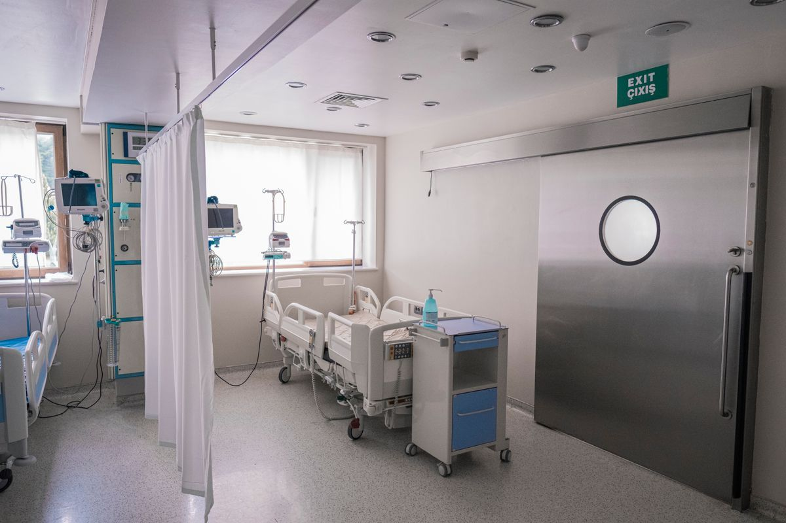
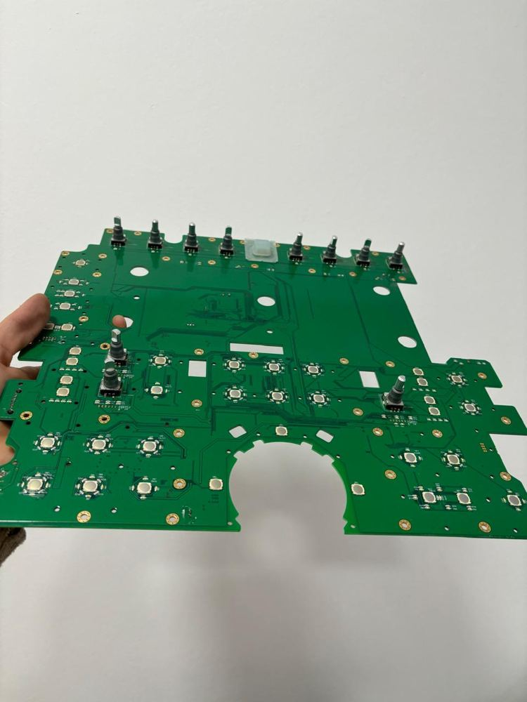
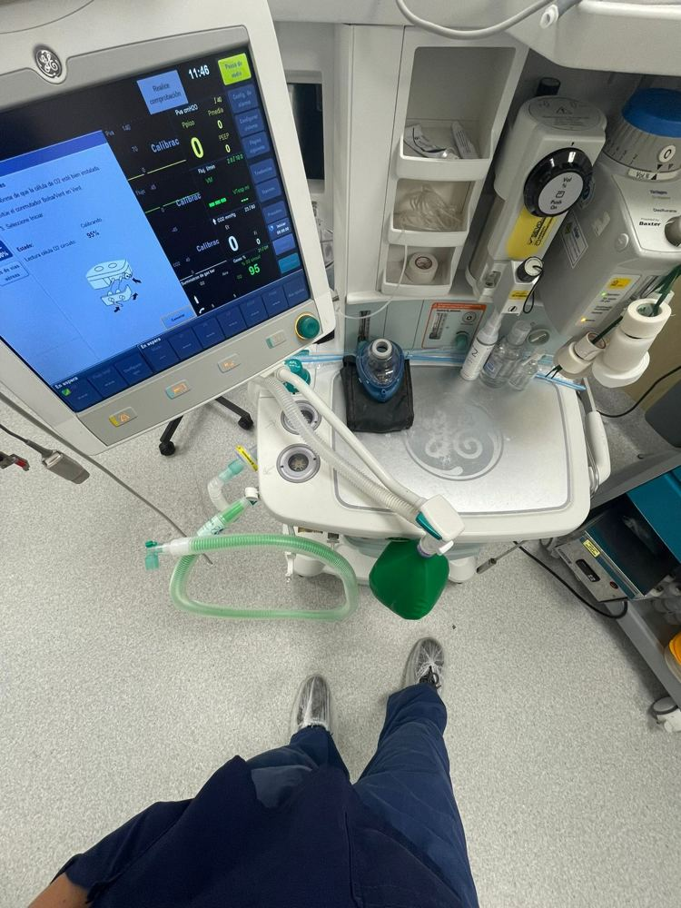
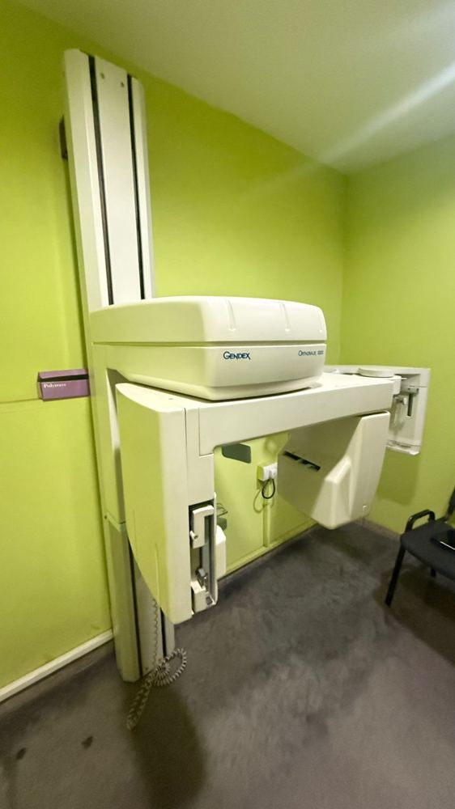
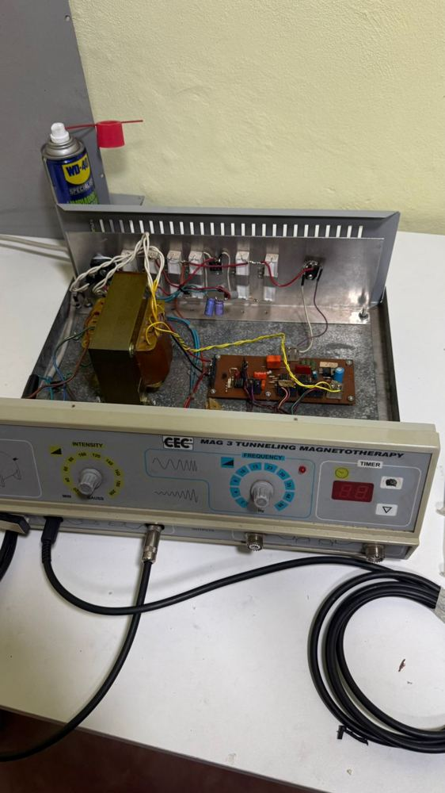
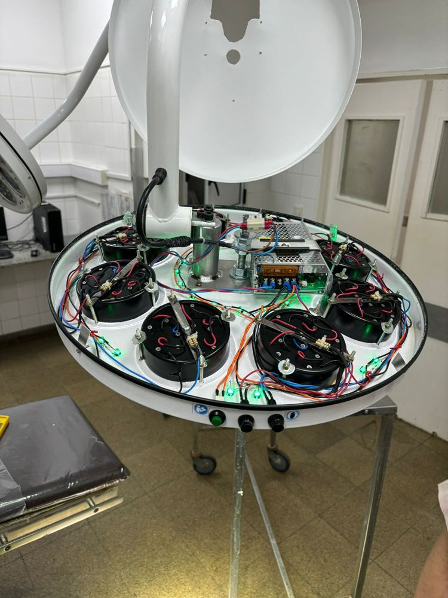
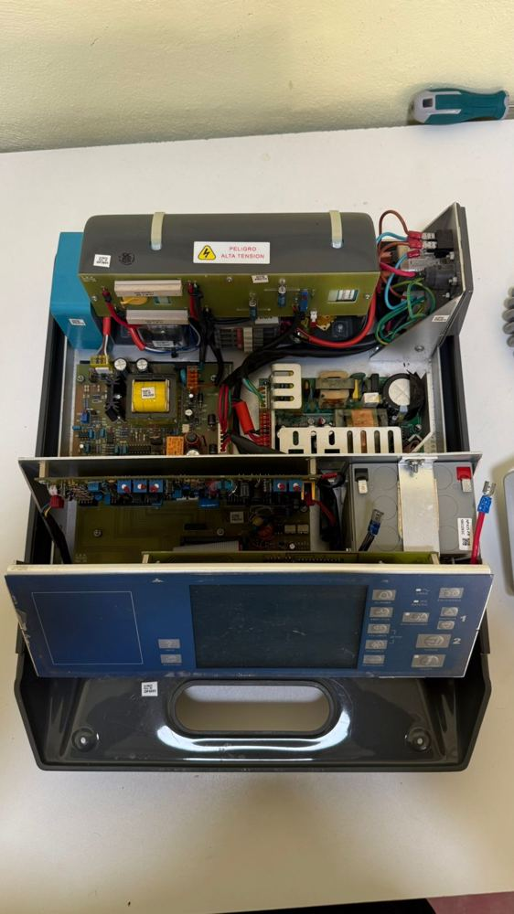

Una empresa de ingeniería biomédica de Posadas, dedicada al equipamiento médico de las instituciones de salud de Misiones y el NEA.
MediSync es una empresa de ingeniería biomédica con experiencia de campo en instituciones de alta complejidad de la ciudad de Córdoba. Nacimos para que las instituciones de salud del NEA tengan ese nivel de ingeniería clínica, cerca y con respuesta rápida.

Respondemos en menos de 24 horas en Misiones, sin costos de traslado de técnicos de otras provincias.
Quien le vende el equipo también lo instala, le provee los insumos y lo mantiene.
Cada intervención queda registrada con su informe técnico, lista para habilitaciones y prepagas.
Equipar, abastecer y mantener la tecnología médica de las instituciones de salud del NEA, con criterio técnico y respaldo local.
Ser el socio técnico de referencia en equipamiento médico para las instituciones de Misiones y el NEA.
Un equipo parado afecta pacientes. Cada intervención la tratamos con esa urgencia.
Su institución sabe qué se hizo, cuándo y con qué componentes.
Estamos en Posadas. Cuando un equipo falla, respondemos en horas.
Conocemos su equipamiento en profundidad y lo acompañamos en el tiempo.






Cobertura en toda la provincia de Misiones, con base operativa en Posadas. ¿Necesita servicio en otra provincia? Consúltenos.
Coordinemos una visita para conocer su equipamiento y armar un plan a su medida.